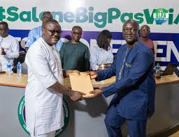
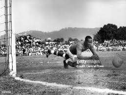

GENERAL INFORMATION

The Sierra Leone Football Agency governs football across the nation, from grassroots initiatives to the professional Premier League and national teams.
AGENCY PARTNERS

We collaborate with FIFA, CAF, and local corporate sponsors like Leone Rock and Africel to develop infrastructure and talent.
EXECUTIVE COMMITTEE
Led by the SLFA President Thomas Daddy Brima and an Executive Committee elected to guide the strategic vision of our football.
OUR HISTORY
Founded in 1960 and affiliated with FIFA in 1967, we have a proud history of competing on the African stage and nurturing global stars.